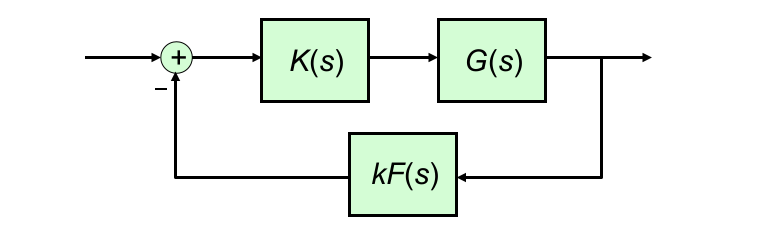
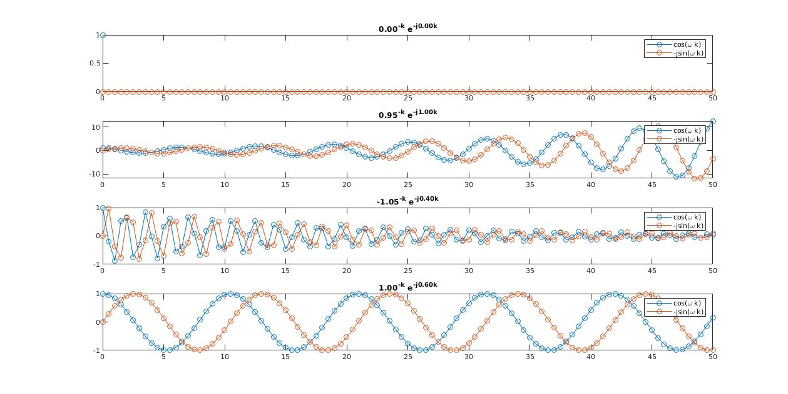

3F1 Signals and Systems
L1. Introduction and Recap
- Given the gradient (rate of change) of some variable over time dtdy=f(y,t)
- Define a fixed timestep δt. Then, ignoring initial conditions, we can derive an approximate solution for the next timestep:
y(t+δt)=y(t)+δt×dtdy=y(t)+δt×f(y,t)
1.2 Pros and Cons of Discrete Time Methods
- Examples using digital signal processors (Digital circuits) over the analogue/continuous (Analog electronics) processes are: digital audio, digital communication link, image processing and speech synthesis.
- Note Discrete Time is different from digital signals, discrete time signals have quantized time interval but the output is not quantized, digital outputs are quantized. Below are the advantages and disadvantages of discrete time methods:
### 1.3 LTI Systems Revision
- A system is linear if it satisfies the Principal of Superposition:
if L(u1(t))=y1(t) and L(u2(t))=y2(t), then for any scalars α1,α2:
L(α1u1+α2u2)=α1L(u1(t))+α2L(u2(t))=α1y1(t)+α2y2(t)
- A system is time-invariant if L(u(t))=y(t) then L(u(t+T))=y(t+t) for any time interval T
- Note nearly all real world systems are not time invariant, i.e. the structural integrity of a bridge changes over time.
- A system is stable if the transfer function G(s) has no poles in the right half plane or on the imaginary axis.
- For a stable LIT system G(s), the steady state response for an input u(t)=sin(ωt) is:
yss(t)=∣G(jω)∣sin(ωt+∠G(jω))
- The Nyquist Stability Criterion gives a test for the closed loop system to be stable. Consider the following feedback system:
- First plot the Nyquist diagram of F(s)G(s)K(s), which is the locus of F(jω)G(jω)K(jω) as ω varies from −∞ through to 0 to ∞
- Let N be the number of anti-clockwise encirclements of the −1/k point of the Nyquist diagram
- Closed loop stability is achieved ⟺N=# of RHP poles ofF(s)G(s)K(s)

- MATLAB Nyquist Implementation (Non library):
In order to plot the nyquist plot for G(s)=(s+2)(s+4)(s+6)1:
syms s w
G = 1/((s+2) * (s+4) * (s+6));
G_w = subs(G, s, j*w);
W = [-100 : 0.1 : 100];
Nyq = eval(subs(G_w, w, W));
x = real(Nyq)
y = imag(Nyq)
- MATLAB Nyquist Implementation (Library)
G = tf ([0 0 0 1],[1 12 44 48])
nyquist(G)
grid on
We know Laplace transform maps a signal from time domain into s domain, it operates on continuous signals x(t). What about its equivalent for discrete signals?
A discrete time signal is a number sequence with discrete intervals T:
[x(0),x(T),x(2T),...]or[x0,x1,x2,...]
T is also known as the sampling period, i.e. the intervals between two signals is the period of time we wait before we take a sample of the continuous signal x(T). A standard notation is:
{x(kT)}k≥0or{xk}k≥0
Analogous to Laplace transform, the z-transform for {x(kT)}k≥0 is :
k=1∑∞x(kT)e−skT=k=1∑∞x(kT)z−k
We use z=esT to make the notation easier as esT always appears as a group.
But what exactly is z-transform? We recall from IB that esT is equal to eσ+jω=rejω, now the important thing is to visualize possibilities for z−k=r−ke−jωk. k in this case is the index of our signal, we can literally interpret it as equivalent to time in a continuous signal. Just like how we plot time varying functions, here z−k is an 'index' varying function with r and ω interpreted as the amplitude and frequency of some signal sampled with time period T. Figures below show a set of possible signals generated by z−k:

So z−k generates all possible signals ranging from a train of ones (r=0,ω=0) to exponentially decaying and increasing sinusoids. This is what we mean by mapping a signal from k to s domain. But what does the dot multiplication mean for each x(kT)z−k? Without diving into details, say if we have x(kT)=[3,−3,3,−3,...] and z∣s=0−k=[1,1,1,1...], multiplying these together, we get ∑k=1∞x(kT)z∣s=0−k=0, the zero here can be interpreted as a form of correlation between two functions, i.e how much component there is in one function from another, or the response of the system had we excited it with that signal. Putting all these together, we see z-transform tells us the response of our system at all possible input signals, just like Laplace transform except we are mapping from k to s.